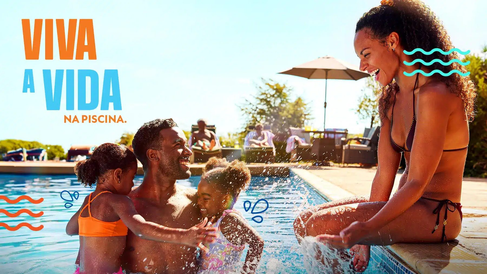
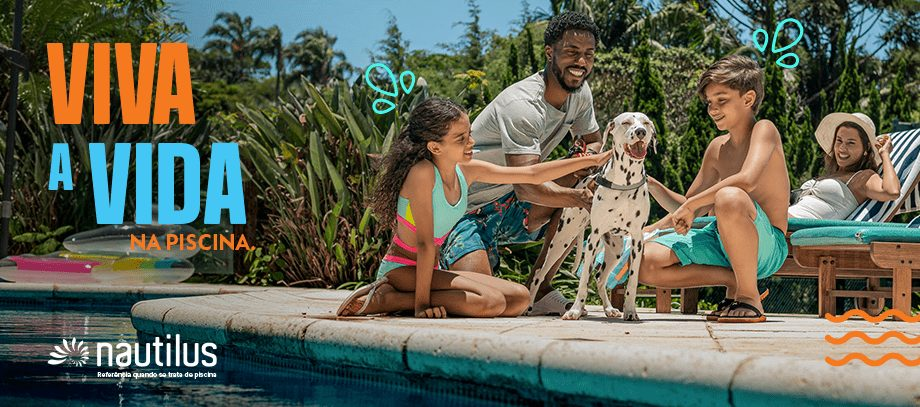
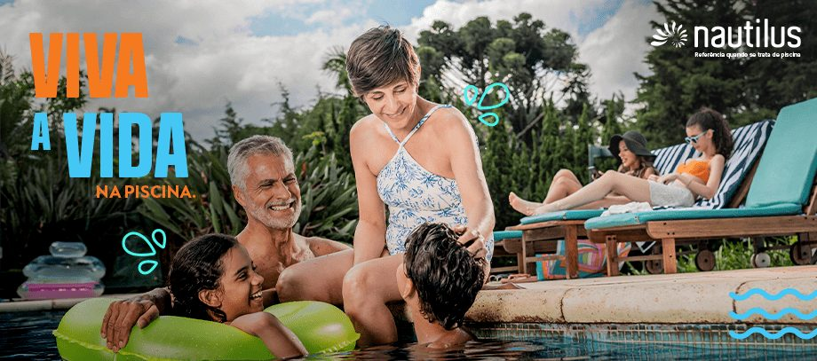

Vídeo principal
Peça central da campanha, para todos os canais da marca.
Uma campanha que coloca o cliente como protagonista: a piscina como cenário onde a vida acontece de forma mais feliz.
Case desenvolvido na Agência Bee Creative para Nautilus. Ver case original ↗

01 / O PROJETO E O DESAFIO
A Nautilus é uma empresa brasileira, fundada em 1984, especializada no desenvolvimento, fabricação e comercialização de equipamentos para piscinas.
Nosso objetivo foi criar uma campanha de branding que despertasse identificação e afeto, colocando o cliente como protagonista: alguém que vive, compartilha e cria memórias ao redor da piscina.
O desafio central era construir uma comunicação mais humana, autêntica e versátil, que conectasse a marca com os momentos reais e afetivos do dia a dia das pessoas, respeitando a identidade visual da empresa, mas trazendo frescor e emoção ao discurso.

02 / A CAMPANHA
A campanha foi baseada em um storytelling leve, afetivo e nostálgico, que traduz a piscina como um cenário onde a vida acontece de forma mais feliz. A narrativa destacou momentos cotidianos, como festas, brincadeiras e reuniões em família, reforçando que a Nautilus cuida de tudo para que a piscina seja sempre um lugar de bem-estar e lembranças inesquecíveis.
O projeto gráfico combinou uma nova paleta secundária derivada das cores institucionais, fontes que equilibram seriedade e leveza e recursos visuais que tornaram a comunicação mais reconhecível e emocionalmente envolvente.
Peça central da campanha, para todos os canais da marca.
Conteúdo alinhado ao conceito, com foco em engajamento e relacionamento.
Testeiras e banners, com elementos visuais exclusivos para padronizar e reforçar a identidade da campanha.
